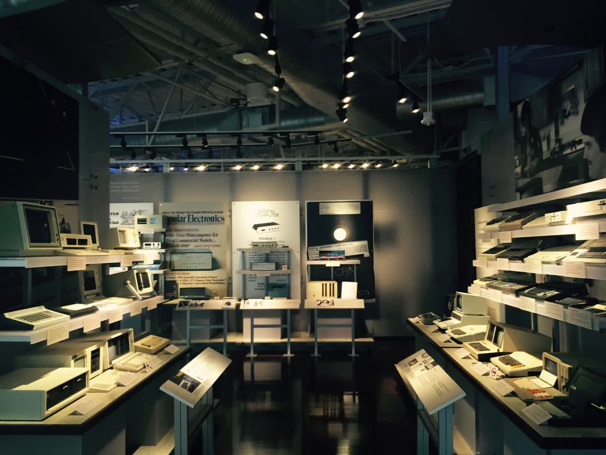
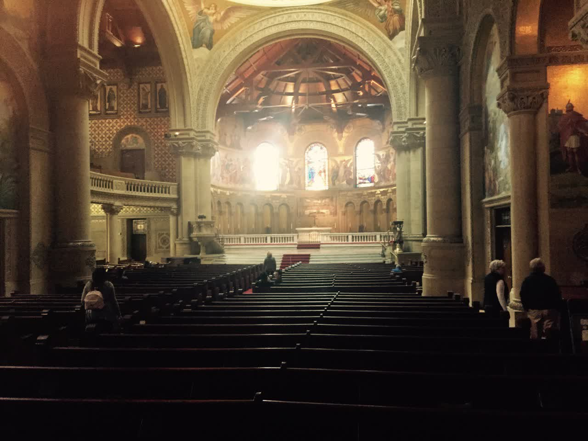
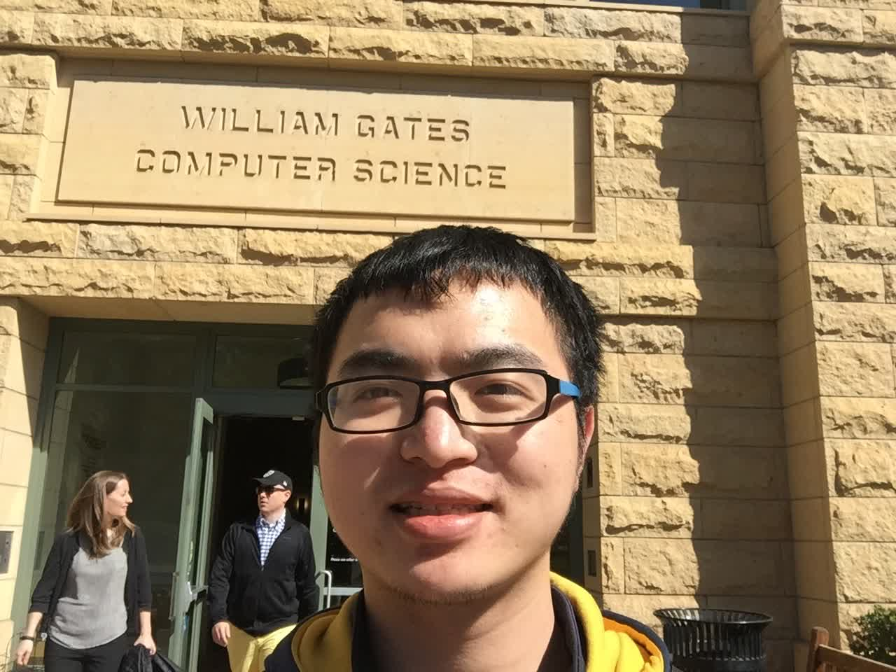
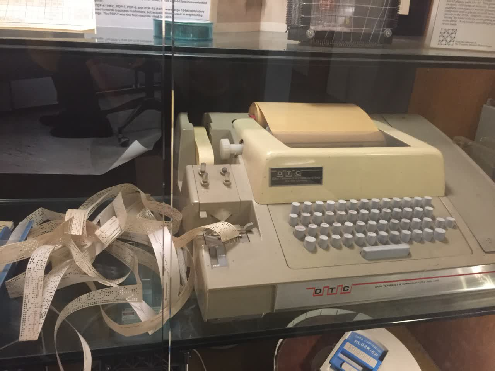
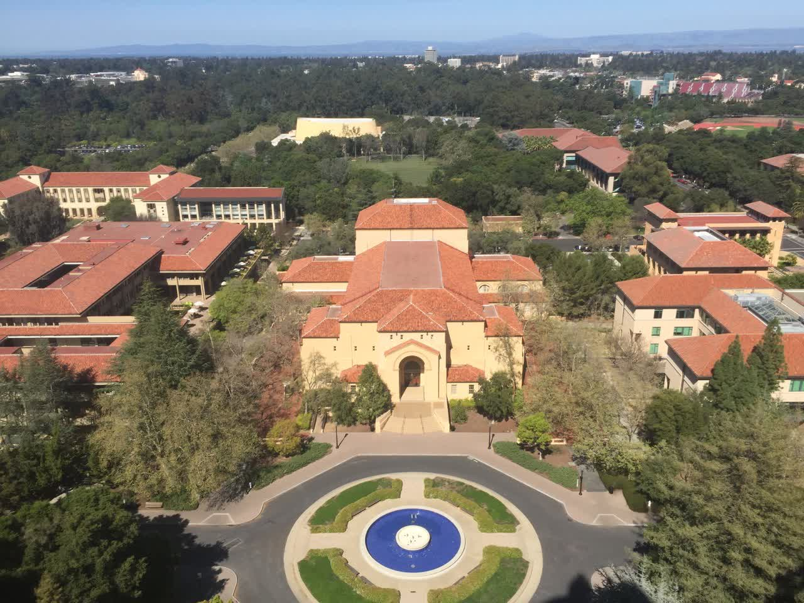
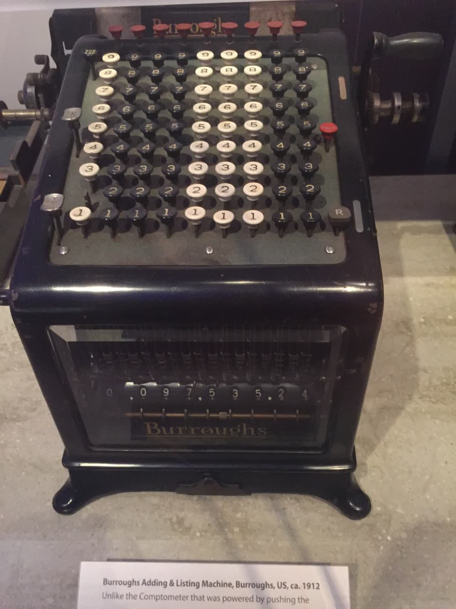
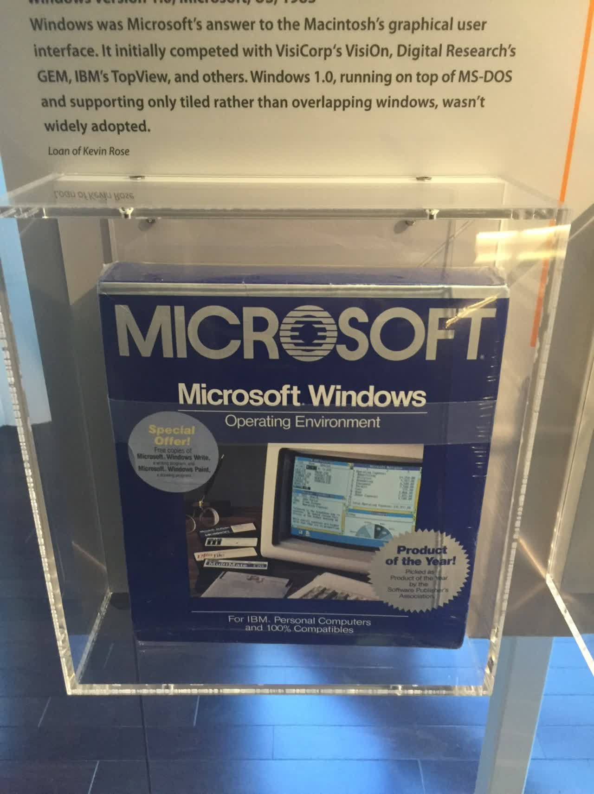
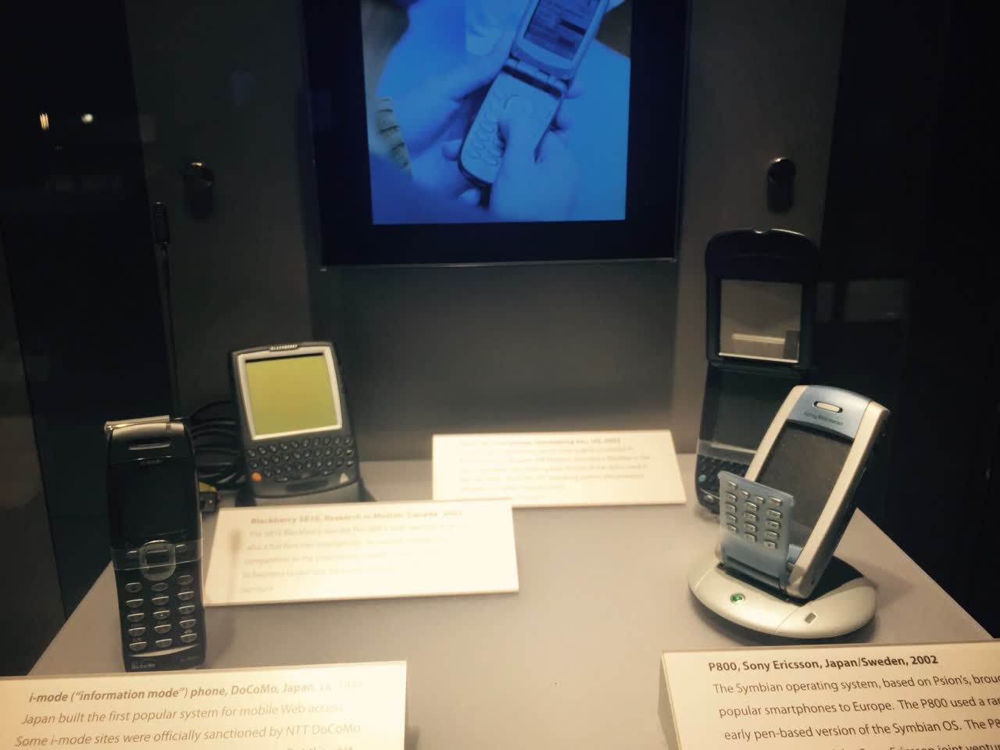

アメリカ旅行 | オリジナル、AI翻訳




3.14～4.1の間、アメリカに半月滞在し、スタンフォード大学、Google、コンピュータ歴史博物館、Y Combinatorインキュベーターを訪れました。先人たちが大きな好奇心と精力を注いで作り上げた傑作を目の当たりにし、Googleのビルに集まるエリートたちが世界に最高のサービスを提供する姿を見ました。また、スタンフォード大学のゲイツビルで最先端の学問を研究する大学院生や、YCで自分たちの製品を作り上げるために奮闘する若者たちの姿も見ることができました。その後、サンフランシスコに移動し、多くのホームレスを見かけ、頻繁に鳴り響くサイレンに不安を感じました。シリコンバレーの中国人スタートアップチーム「Mailtime」と知り合い、彼らのバグ修正を手伝い、シリコンバレーでの仕事の雰囲気を味わいました。NBAの試合を観戦し、間近でステフィン・カリーとクリス・ポールを見ることができました。第二次世界大戦の英雄であるホーネット空母も見学しました。南北戦争で有名なユニオンスクエア、デ・ヤング美術館、カリフォルニア科学アカデミー、多くの企業が生まれたユニバーシティ・アベニュー、ゴールデンゲートブリッジ、ベイカービーチも訪れました。私の住んでいた場所から3キロ圏内にあるTwitter、Uber、LinkedIn、Slackのオフィスを見に行き、近くにはGitHub、Pinterest、Docker、Amazon、Dropboxもありましたが、それらには足を運びませんでした。
友人からの影響もあり、自分自身もシリコンバレーに憧れていたので、3月2日の午後に再びアメリカに行くことを決意し、すぐに申請書を記入しました。12日後にはアメリカに到着し、半月ほど遊びました。総費用は2万元でした。これは自分にとって大きな励みになり、以前は難しいと思っていたことが、今では簡単にできるようになりました。以前はビザが何なのか、もっと貯金してから行こうなどと考えていました。
この旅路で助けてくれたXuehui、Xuehuiのルームメイト、Mailtimeチーム、Alexに感謝します。また、多くの人々と出会いました。UberやLyftのドライバー、Airbnbのホスト、道案内や乗り換えを教えてくれた人々、飛行機の隣席の友人たち、カフェやキャンパス、路上、ショッピングモール、電車、バスで出会ったすべての人々に感謝します。
「アメリカに行くことは、もう待てない！」
アメリカ観光ビザを3日で取得した後、1週間後の3月9日にビザの貼られたパスポートを受け取りました。そこで、3月14日の航空券を予約し、アメリカに向かいました。初めての海外旅行で、少し興奮していました。しかし、遠出する際に必要なものはあまりないことを知っていたので、1、2着の服を斜め掛けのノートパソコン用バッグに入れました。バックパックにはパソコンを入れました。銀行で3000ドルを両替しましたが、後になって考えるとあまり必要ありませんでした。Visaのクレジットカード1枚で十分でした。バックパックを背負い、斜め掛けのバッグを持って、出発しました。
飛行機はまずシアトルに向かい、その後サンノゼへ乗り継ぎます。シアトルの空港では、搭乗口まで直接小型地下鉄で行くことができます。北京首都国際空港では、通常バスに乗って搭乗口に向かいますが、ここシアトルでは完全に自動化された輸送システムで、運転手の姿は見えません。これらの車両は、自動的に乗客を任意の搭乗口から別の搭乗口へと運びます。すごいですね、空港がこんな風に運営されているとは思いもしませんでした。


まるで、テストやリリースがすべて自動化された企業に来たような気がします。このようなソリューションを考え出す優秀な人材がいて、関連する組織もそれを導入する意欲があるようです。
6時間待って乗り継ぎ便に乗るため、Burger Kingで何か食べ物を買いました。ここの店員さんはみんなとても親切です。Burger Kingのお姉さんは、一人ひとりの順番が来ると、まるで長年の友達のように冗談を言ってくれます。おそらく競争が激しいからでしょう、前の輸送システムのように、ここの人々は最高のサービスを提供したいと思っているので、彼らの上司は従業員に顧客に対して親切にするよう求めているのかもしれません。実際、普通の通行人もとても友好的なので、店員が親切なのも不思議ではありません。
サンフランシスコでのある日、地下鉄とバスが同じ場所にあったのですが、どう乗ればいいかわからず、二人の男性が近づいてくるのを見て、スマートフォンを取り出し、行きたい場所を伝えました。彼らは地下に行くように言いました。私は彼らについて地下へ行き、彼らは改札口を通り抜けましたが、私は紙の切符を買いに行きました。彼らは私を30秒ほど待ってくれましたが、私はまだ切符を買い終わっていませんでした。私は彼らに先に行ってくれと言いました。すると彼らは、改札口を過ぎたら、さらに階段を下りて、反対側に乗るように教えてくれました。私は了解しました。それから彼らは去っていきました。
北京で航空券を受け取るとき、一人の女性と知り合いました。シアトルで飛行機を待っていると、また彼女に会いました。彼女とは前後して3、4時間話しました。彼女はタイに旅行に行ったことがあり、看護師でした。彼女の口癖は、「It depends」（状況による）でした。多くのこと、例えばアメリカの起業状況やアメリカと中国の違いについて、私は一本調子で、1は1だと思っていましたが、彼女はいつもより包括的に理解することができました。彼女はiMessageを非常に多く使っていました。20日間滞在した後、私も気づきましたが、iMessageはアメリカ人にとって私たちにとってのWeChatのようなものです。おそらくみんながiPhoneを使っていて、iMessageで直接データ通信を使うからでしょう。
スタンフォードとユニバーシティ・アベニュー
シリコンバレーを上空から見下ろすと、とても美しく、家々が整然と並んでいるように見えました。到着すると、学輝が迎えに来てくれました。学輝は私が林業大学の1年生の時の助教で、北京大学で修士課程を修了した後、Googleで働いています。彼はレンタカーのBMWで私を迎えに来てくれました。月々300ドルくらいの車です。彼の家に着くと、まるで別荘のようで、1階には駐車場、2階にはリビングとキッチン、3階には3つの寝室がありました。とても快適で広々としていました。彼は大学時代の同級生と一緒に住んでいます。
Googleで朝食を食べてきました。以前の会社はマイクロソフトアクセラレーターに選ばれたため、マイクロソフト中国研究院の食堂でも食事をしたことがありますが、それも十分良かったのですが、Googleはそれ以上でした。食事が終わった後、お皿を置く場所が回転する仕組みになっていて、こちら側でお皿を置くと、半回転して、おばさんがお皿を洗い始めます。その時は本当に驚きました。Googleの駐車場にはすでに充電スタンドが設置されており、電気自動車の時代がすぐそこまで来ていることを感じました。


次に、タクシーでスタンフォード大学へ向かいました。Uberを使って、10ドルほどでした。Uberのドライバーと話をしましたが、彼はラテンアメリカ系の人で、シリコンバレーではスタートアップ企業が至る所にある（startups are everywhere）と言っていました。彼は、市民が銃を持つことを禁止すべきだと考えており、銃は一部の狂った人々を助長すると考えています。ここで再度Visaカードをお勧めします。これでUberにバインドできます。



次に、生物工学を専攻する中国人の学生に声をかけました。彼はスタンフォード大学の大学院に通っており、自習できる場所を探していました。彼が行きたい建物に到着した後、私は近くをぶらぶらしながら、スタンフォードのコンピュータサイエンスの建物を見てみたいと思い、ビル・ゲイツが寄贈した建物にやってきました：

廊下にはさまざまな電子機器がたくさんあります。





彼らの知性と教育に対する深い理解に感銘を受けました。私の大学は北京林業大学で、校舎には林業分野の先人たちを紹介する展示もありますが、スタンフォードと比べるとその数ははるかに少ないです。ゲイツビルでは、廊下の至る所、展示ケースの一つ一つにそのような展示があります。このような環境で育つ新世代の若者たちは、どのような考えを持つのでしょうか？
その後、私は建物内をぶらつき、学生たちがコードを打ち込んだり、議論したりしている部屋や、廊下に展示されている彼らの論文作品を見ました。


ここで、私が聞いたことがある二人の中国人PhD、陳丹琦と陳啓峰を紹介します。二人とも高校時代に国際コンピュータ競技で金メダルを獲得しています。
私は自分の未来について考えずにはいられませんでした。彼らは最先端の技術を研究し、画像を使って現実の動きをシミュレートする方法などを探求しています。おそらく、実況サッカーの技術も大学から生まれたのでしょう。一方で、私は大学を早々に中退し、起業の道を歩んできました。Paul Grahamは、大学で起業のための最良の準備は、自分を未来に送り込み、その分野の最先端に立つことだと言っています。起業において最も重要なのは、その分野の専門家になることで、Googleの創設者たちも検索エンジンの専門家でした。ビジネスの知識は、起業してから学び始めてもすぐに身につけることができるのです。
その後、フーバータワーに行き、スタンフォード大学のキャンパスを一望しました。


多くの大学は世界のトップクラスであり、多くの教授は世界一流です。ここでは社会のリーダーを育て、その人々が学校に戻って寄付し、教育棟を建て、それを展示館のようにし、若い世代に影響を与えて社会のリーダーになるよう促し、その循環が続いています。
その後、スタンフォード大学の近くにある大学通りを散策しました。165番地は有名な「ラッキーオフィス」で、GoogleやPayPalがここで生まれました。お菓子屋さんで出会った男性は、Cラウンドの企業BevyのCEOで、ボストンから出張で来て、投資家との会議に参加していました。


最後の2枚の写真では、この場所が非常に賑やかで、多くの人が投資家や起業家のように見えます。見分ける良い方法として、後ろに傾いているのが投資家で、前のめりになっているのが起業家だと言われています。なぜここにこれほど多くの投資家や起業家がいるのでしょうか？投資会社が近くにあるからでしょうか、それとも起業家がここに多く集まっているからでしょうか？
夜はAirbnbの部屋に泊まり、ホストは地元の人で、ここで生まれ育ちました。彼は1980年にAppleがIPOした時、すでにジョブズのことを知っていて、Appleの成長を見守ってきたと言います。彼は、テクノロジーは若者がやることで、非常に多くのエネルギーが必要だと語りました。ジョブズと同じ町にいるという感覚は本当に不思議で、小さい頃からその影響を受けて育ち、テクノロジーに興味を持つ人は、大きく励まされるでしょう。私が子供の頃、神舟6号が打ち上げられた時、私はとても興奮し、宇宙飛行士になることを夢見ていました。神舟6号は陝西省で打ち上げられましたが、私は広東省にいても、その志を持ち続けました。もし距離が非常に近ければ、聞く話もたくさんあります。ニュースだけではなく、友達が直接見たことをあなたに話してくれるかもしれません。
Googleとコンピュータ歴史博物館
二日目は、Googleの本社ビルを散策しました。たくさんの建物があり、その一部だけを訪れました。


次に、コンピュータ歴史博物館を訪れました。木製のそろばんから機械式のコンピュータ、そして電子計算機へと進化する過程、ハードディスク、プリンター、マウスなどのハードウェア、Windows 1.0やPhotoshopなどのソフトウェアの歴史、ゲームや画像技術の歴史など、すべてが一目でわかるようになっていました。アメリカの技術が長い歴史を持ち、何世代にもわたる多くの人々の情熱的な取り組みによって、これほどまでに卓越したものになったことに感銘を受けました。




上の作業員がカードを機械に送り、機械がそれを並べ替えます。





Xerox パロアルト研究所（PARC）は、神々しい存在であり、グラフィカルユーザーインターフェース（GUI）、マウス、ローカルエリアネットワーク（LAN）、レーザープリンター、オブジェクト指向プログラミング、MVCアーキテクチャ、ビットマップなどを発明しました。

出来た後、ランチを食べに行きました。とても美味しかったです、ある種のパスタでした。

ここまでにします。次回は、サンフランシスコの有名企業の密集度や、そこの給与、サンフランシスコでの10日間の住まいと生活の感想、そしてUSSホーネット空母の見学で得たいくつかの見聞についてお話しします。